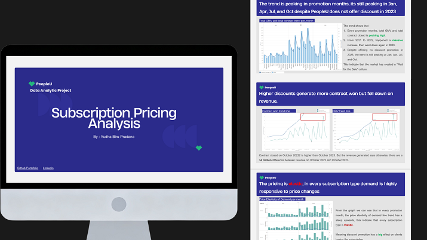

Projects
Subscription Pricing Analysis (SaaS)

Project Summary
PeopleU is a B2B SaaS company specializing in HR management solutions. This data analytics project evaluates the impact of historical discount promotions on contract conversions to develop a strategic pricing framework for 2024. The analysis covers three years of sales data (2021–2023) across Enterprise, Startup, and Business subscription tiers.
The primary objective is to increase total contract conversions from leads and total Gross Merchandise Value (GMV) by 50% year-over-year (YoY) in 2024. The project seeks to identify if discounts significantly affect conversions and to discover strategic insights for optimizing revenue growth and lead-to-contract deals.
Scope Of Work / Achievement
- Analyzed three years of sales data to identify a 39.9% drop in contract volume following discount removal.
- Developed a 2024 pricing strategy aimed at increasing total contract conversions and total GMV by 50% YoY.
- Identified that the Business subscription package is highly elastic, with contract wins peaking during promotional months.
- Recommended shifting to action-based promotions to convert stagnant leads from 2023 with a one-time 20% discount.
Recommendations
- Conducted subscription pricing analysis using SQL, optimizing data to increase in total contract conversion from leads and total revenue by 50% year-over-year.
- Uncovered a 39,9% decline in contracts in 2023 due to the removal of discount promotions, resulting in a strategic recommendations for pricing and promotional timing.
- Developed actionable visualization in Tableau, showcasing the relationship between promotional activity and contract closures to facilitate stakeholder engagement.
Tools and Method
Tools : SQL, Tableau
Method : Discount Pricing Analysis, Price Elasticity of Demand, Revenue and Sales Trend Analysis